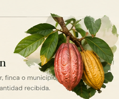
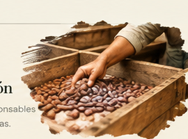
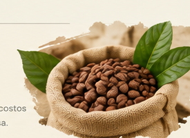
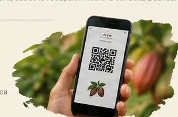

Origen
Productor, finca o municipio, fecha y cantidad recibida.
CACAO DEL HUILA · COLOMBIA
Una nueva forma de seguir la historia del cacao: desde la finca y la recepción del lote hasta su transformación y llegada al comprador.
UNA HISTORIA QUE MERECE SER CONTADA
El cacao no empieza en una barra de chocolate. Empieza en la tierra, en el cuidado del cultivo y en las manos que lo hacen posible.
CACAO VIVO organiza la información de recepción, transformación, inventario y origen para que una asociación pueda tomar decisiones informadas y compartir con compradores una historia verificable.
TRAZABILIDAD CON SENTIDO
La información del proceso conectada en un recorrido claro, desde la recepción hasta la consulta pública.

Productor, finca o municipio, fecha y cantidad recibida.

Entradas, salidas, responsables e incidencias registradas.

Existencias, merma, costos y alertas con su causa.

Una ficha comercial pública con datos autorizados.
CONSULTA PÚBLICA
Consulta su origen y estado. Los costos internos y datos privados no se muestran en esta vista.
VISTA GENERAL
Aquí tienes el estado actual de los lotes y sus procesos.
RECEPCIÓN E INVENTARIO
Registra la recepción y controla las cantidades disponibles.
| CÓDIGO | PRODUCTOR | ORIGEN | RECIBIDO | DISPONIBLE | ESTADO | DETALLE |
|---|
Completa la información de recepción. Los campos obligatorios deben estar validados antes de guardar.
PROCESO AGROINDUSTRIAL
Registra una etapa vinculada a su lote de origen y revisa sus indicadores.
Merma = (entrada − salida) ÷ entrada × 100. Costo unitario = costo ÷ salida vendible. Margen = (precio − costo unitario) ÷ precio × 100. El umbral de 15% es una regla del reto, no un estándar de calidad.
| LOTE | ETAPA | ENTRADA | SALIDA | MERMA | COSTO |
|---|
RECORRIDO DEL PRODUCTO
Reconstruye la historia de un lote desde su recepción hasta el estado actual.
INFORMACIÓN PARA COMPRADORES
Vista pública con origen y estado; no incluye costos internos ni datos privados.
La vista QR es ilustrativa. Para que sea escaneable debe generarse con una URL pública desplegada.
CONTROL Y PREVENCIÓN
Cada alerta indica qué regla se activó y por qué requiere atención.
REGISTRO DE ACTIVIDAD
Consulta quién hizo un cambio, cuándo ocurrió y qué información afectó.
| FECHA | USUARIO | ACCIÓN | ELEMENTO | DETALLE |
|---|
ACCESO PRIVADO
Selecciona el perfil técnico autorizado para continuar.
Administrador: admin@cacaovivo.co / CacaoDemo2026
Operador: operador@cacaovivo.co / OperadorDemo2026
Credenciales ficticias para la presentación. No usar en producción.Los compradores no necesitan iniciar sesión. Pueden consultar la trazabilidad desde la página pública.
CREA TU CUENTA
Registro público para compradores. Las cuentas técnicas son autorizadas por la asociación.
RECEPCIÓN DE CACAO